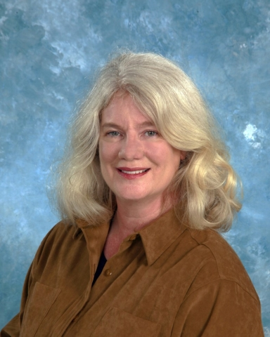

In 2013, the U.S. Department of Energy (DOE) Sustainability Awards recognized more than 20 teams and individuals representing DOE sites and national laboratories. These winners are being recognized for their outstanding sustainability contributions, including accomplishments in managing pollution, waste, energy, water, and vehicle fleets.
The 2013 winners improved the sustainability of DOE operations by developing on-site renewable energy sources; repairing and replacing inefficient equipment; installing green information technology software and hardware; right-sizing fleets while increasing the use of alternative fuels and alternative fuel vehicles; recycling and reusing equipment in lieu of disposing it; using innovative approaches to improve environmental quality and public health and safety; developing and advancing new processes to improve productivity; increasing the use of recycled water rather than potable water; and promoting sustainability throughout organizations through collaborative partnerships, education, and outreach.
The 2013 winners were recognized in February 2014 in a special issue of the DOE Sustainability SPOtlight Newsletter.
Award categories included:
- Change Agents
- Sustainability Champions
- Renewable Energy
- Green IT Stewardship
- Scope 1 and 2 Greenhouse Gas Management
- Sustainable Buildings
- Sustainable Campus
- Waste Reduction and Pollution Prevention
- Fleet Management
- Innovative and Holistic Approach
- Sustainable Communications
- Performance-Based Contracting Leader
- Program Champion
- Most Improved: Goal Performance
- Most Improved: Data Reporting
- DOE Headquarters Metering Award
- 2013 Federal Electronics Challenge Award
Change Agents
An individual (or group of individuals) who takes the initiative to foster behavior change in his or her immediate work environment, organizational unit, or site. Recognition focuses on efforts, large or small in scope, that advance one or more of the goals identified in the Department's Strategic Sustainability Performance Plan (SSPP).
Y-12's Dynamic Duo "Invents" Sustainable Solutions to Perform Plant's Mission
Y-12's team of Ron Simandl and John Brown are proven dynamic change agents. Ron, a research chemist, and John, a laboratory associate, teamed up to improve operations at Y-12, resulting in countless successes and significant environmental benefits.
Starting in the 1980s, the team began their partnership by researching alternative and safer materials for everyday laboratory operations. Specifically, the team identified Freon 113 as a safer replacement for perchloroethylene for chip-cleaning applications. Since that initial project, the team adapted their approach several times for an ever-changing landscape. When the Clean Air Act began phasing out Freon 113, the team modified laboratory operations to begin using Vertrel as a more environmentally friendly substitute. In 2008, Vertrel substitution eliminated more than 19,600 pounds of Freon 113 emissions annually, producing cost savings of approximately $277,000. More recently, the team began working to reduce Vertrel use altogether, as the key ingredient was found to be a greenhouse gas (GHG). The team developed a study outlining improvements to the Vertrel cleaning methodology that is expected to reduce emissions by 50%. Once implemented, the improvements are projected to reduce Y-12's scope greenhouse gas (GHG) emissions by more than 11,000 metric tons of carbon dioxide equivalents (MTCO2e).
ORNL's Susan Michaud Lives and Breathes Sustainability
Oak Ridge National Laboratory's (ORNL) Susan Michaud is committed to promoting a sustainable culture at the lab and her surrounding community. Susan began her career nearly 20 years ago as ORNL's pollution prevention coordinator. She focused on implementing projects, both small and large, to begin changing the culture at ORNL. During this time, Susan partnered with various lab personnel to transform operations and overcome ingrained barriers to progress. Currently, Susan contributes to ORNL's Sustainable Campus Initiative as a "roadmap" owner for the recycling and reusing of office waste. In this role, Susan is known across the lab for her passion to lead change and foster a culture of sustainability. She embraces a hands-on approach for instruction, including "dumpster diving" to demonstrate ways to strengthen pollution prevention. In 2012, Susan documented 37 new pollution prevention-related projects at ORNL, eliminating more than 51 million kilograms of waste resulting in a cost savings of more than $8 million (including ongoing reuse and recycle projects).
Sustainability Champions
Individuals who demonstrate a history of exemplary performance in leading implementation of sustainable practices while reflecting a comprehensive approach to energy and environmental management through innovative strategies, practices, and outreach.
Chuck Oldham Champions Electronics Stewardship for Huge Cost Savings
The East Tennessee Technology Park's (ETTP) Chuck Oldham excels in developing practical solutions to sustainability management through innovative strategies, practices, and outreach. Notably, Chuck's efforts to advance electronics stewardship has garnered widespread praise and earned ETTP numerous Federal awards. Under his tutelage, ETTP improved in the Federal Electronics Challenge (FEC) each year since 2010, when they were first awarded an FEC Silver Award. In fiscal year (FY) 2012 and 2013, ETTP received the Platinum award for sustainable purchasing and disposal of electronic assets.
Chuck has also overseen successful purchasing efforts for Electronic Product Environmental Assessment Tool (EPEAT) registered products, including desktops, laptops, and monitors. ETTP maintains an EPEAT purchasing rate of 100% through Chuck's efforts to verify products and manufacturers. In addition, when purchasing equipment not part of the EPEAT registry, Chuck carefully evaluates and verifies a product's attributes, including designations for Energy Star and other environmentally friendly qualities.
David Wolfe Leads Sustainability Initiatives for the Savannah River Site
David Wolfe has been a consistent and invaluable resource for the Savannah River Site (SRS) and DOE for nearly 20 years. With a primary focus on energy conservation, David has held many roles at SRS. Currently he serves as co-chair of the DOE-SR implementation team for Executive Order (E.O.) 13514, "Federal Leadership in Environmental, Energy and Economic Performance," and champions the SRS Energy Conservation Program. David also expanded his role in recent years to include leadership positions within the SRS Environmental Sustainability Program and SRS's Environmental Management System.
David interfaces with personnel and organizations across SRS and the DOE complex to tackle a multitude of sustainability-related objectives. David supports the development of SRS's Site Sustainability Plan, and more broadly, the goals of E.O. 13514, including waste reduction, alternative fleet fuel use, facility energy usage, and GHG emissions. David has also supported the implementation of several performance based contracts at SRS, the first project occurring in the 1990s. Most recently, David supported the $150 million Biomass Cogeneration Facility energy savings performance contract, which is projected to avoid 100,000 tons of GHG emissions each year.
Renewable Energy
Outstanding achievements in planning, designing, and constructing renewable energy to replace or lower conventional energy consumption.
BNL Solar Farm Largest in Northeast, Powerful Enough to Power 4,500 Homes
The Brookhaven National Laboratory (BNL) holds the proud distinction of hosting the largest utility-scale solar photovoltaic (PV) electricity generating plant in the Northeast United States. The Long Island Solar Farm (LISF) was funded through a 20-year power purchase agreement, partnering BNL with the Brookhaven Site Office, BP Solar International, LLC, and the Long Island Power Authority (LIPA).
The 32-megawatt PV array consists of 164,312 panels and produces enough clean electricity to power approximately 4,500 homes, avoiding nearly 28,000 MTCO2e in GHG emissions annually. During the first full year of operations, LISF produced more than 54 million kilowatt hours of clean renewable energy, exceeding the estimated annual output by 23%.
BNL's commitment to the advancement of solar technology does not end with the LISF. As part of the collaboration at BNL, arrangements were made for construction of a second, smaller array on site at the Northeast Solar Energy Research Center. This 1-megawatt research array will act as a proving ground for BNL and industry partners to test new solar system technologies, including electrical inverters, storage devices, and solar modules. The research array is estimated to provide BNL with 700,000 kilowatt hours of renewable energy annually.
Green IT Stewardship
Exemplary performance implementing green information technologies (IT), including power management, sustainable electronics acquisition, and data-center sustainability.
NREL Designs World's Most Efficient Data Center, Champions E-Recycling
The National Renewable Energy Laboratory (NREL) is a leader for DOE in green IT, electronic stewardship practices throughout the entire life cycle, and optimization of high-performance computing (HPC) data centers. In FY 2011, NREL became the first Platinum Federal Electronics Challenge (FEC) partner among the DOE laboratories. NREL has worked tirelessly to maintain this achievement through efficient purchasing, computer power management, and end-of-life management, including repurposing and recycling of equipment.
NREL's strong computer reutilization policy is designed to extend the useful life of a piece of equipment. All computing hardware is evaluated for reuse after being replaced or retired. Most usable equipment is stored and reallocated for use in labs and by temporary employees and interns throughout the campus. Though the minimum recommended useful life of most computing equipment is four years, NREL has extended the average life of electronics to nearly seven years. Equipment deemed to be at the end its useful life for lab purposes is evaluated for appropriate disposition, including donation, resale, or recycling.
NREL's crowning IT achievements focus on its world-renowned high performance data centers. The Research Support Facility (RSF) and Energy Systems Integration Facility (ESIF) each provide a model for excellence in efficient computing data centers. The laboratory enterprise data center, housed in the RSF, averaged sustained power usage effectiveness (PUE) of 1.138 in FY 2012. Similarly, the HPC data center, housed in the newly constructed ESIF, is designed to be the world's most energy-efficient data center with a projected annualized average PUE of 1.06. The HPC data center also features warm-water liquid cooling for its high-power computer components, where 90% of the computer waste heat is captured and reused as the primary heat source for the ESIF offices and laboratory space. The ESIF HPC data center was recognized by InfoWorld in 2013 as a Green 15 winner.
Scope 1 and 2 GHG Management
Implementation of GHG reduction strategies and management approaches that address scope 1 and 2 emissions is recognized with this award. The approach should exceed or supplement targets in the SSPP and emphasize a holistic approach to GHG management.
PORTS GHG Reduction Strategy Leads to Huge Savings
In 2012, the Portsmouth Gaseous Diffusion Plant (PORTS) developed and deployed a successful management approach to reduce scope 1 and 2 GHG emissions. PORTS began with the creation of a site-wide PORTS sustainability team (SST). The team meets monthly to address site sustainability issues and plan actions to help achieve goals and targets. The SST drives the focus and achievement of planned sustainability projects, including targeted sustainability awareness training and energy awareness campaigns. The targeted training was provided to more than 50 PORTS personnel involved in activities that contribute to reducing GHG emissions. The energy-reduction campaign focused on individual responsibilities and best practices, such as turning off unneeded equipment and lighting.
Energy assessments make up a large component of the PORTS GHG management strategy. In 2012, three large process buildings, as well as 10 other support facilities were assessed for potential energy conservation measures (ECMs), covering 9,266,684 square feet. In addition to the facilities already assessed for energy saving opportunities, more than 95% of PORTS covered facilities have now been assessed for ECMs. A site-driven, process efficiency team evaluated the ECMs and selected four operational facilities that had specific, targeted opportunities. The team placed emphasis on ECMs that could be implemented based on the facility's longer-term mission, a high return-on-investment, and the ease of implementation. The upgrades performed included lighting and HVAC upgrades, and the incorporation of automated controls. Through FY 2012, PORTS reduced energy use intensity by 41% compared to the FY 2003 baseline and approximately 40% from FY 2011.
In addition to facility management, PORTS reduced GHG emissions through sustainable fleet management, and most notably, the construction of new, natural gas-fired boilers. Three 1950s-era coal-fired boilers were replaced with two natural gas-fired boilers for a projected annual cost savings of $2.2 million in operations, maintenance, and fuel costs. The new boilers reduce emissions by approximately 48,000 MTCO2e, a 61% reduction.
Collectively, PORTS proactive strategies for GHG management have placed the facility on track to meet the FY 2020 GHG Reduction goal.
ORNL Builds Alternatively Financed Biomass Plant for GHG and Cost Savings
ORNL has a long history of using holistic approaches to advance sustainability implementation. ORNL's Sustainable Campus Initiative, created in 2008, seeks to manage the lab's sustainability efforts through a series of 26 "roadmaps."
After nearly four years of planning and construction, one of ORNL's signature sustainability projects came to fruition in 2012 with completion of a new biomass steam plant (BSP). The new plant, the centerpiece energy-conservation measure of a $94 million energy savings performance contract, replaces a series of 1950s-era natural gas and fuel-oil powered boilers at the central energy plant (CEP). Completion of the project demonstrated ORNL's comprehensive approach to researching and implementing a biofuel- based technology to address energy- and GHG-related issues. In addition to the BSP's operational cost savings and environmental benefits, the BSP will provide operational data for use at similar facilities throughout the country.
The project is expected to produce annual cost savings of $3.8 million, reduce fossil fuel use at the CEP by 85%, reduce water use by 11.8 million gallons annually, and reduce associated GHG emissions by 85%.
Sustainable Buildings
Site-wide programs and projects that promote comprehensive green building principles and demonstrate progress toward meeting the Guiding Principles for High-Performance Sustainable Buildings. Projects involve cross-cutting collaboration to support DOE's commitment to reducing energy intensity and operating costs as well as meeting the Guiding Principles.
George Norek Leads Building Upgrades at Argonne National Laboratory
Argonne National Laboratory (ANL) recently completed major renovations to one of its buildings, which improved efficiency and occupancy comfort and reduced its overall operating impacts.
ANL's Building 214 is a two-story, 23,000 square foot office building originally designed to fit harmoniously with native landscaping and require no additional irrigation water. In 2012, Building 214 became the sixth building at ANL to meet the Guiding Principles for Federal Leadership in High Performance and Sustainable Buildings through a series of upgrades and retro-commissioning led by team leader George Norek. ANL took a holistic and comprehensive approach to improving the building's performance. During the retro-commissioning process, the ANL team found the building's rooftop heating, ventilation and air conditioning (HVAC) equipment was not delivering fresh air to the building. The team made subsequent corrections to balance air flow and improve air quality. The team also performed building modifications to improve the occupant experience and reduce operating impacts. ANL upgraded existing lighting with more efficient alternatives, replaced water delivery with water bottle filling stations, used low-emitting paint and carpet materials during construction upgrades, and expanded recycling options for ANL staff.
Building 214's retro-commissioning improved occupancy comfort and safety, achieved ASHRAE building standards, including 55-2004 and 62.1-2007, reduced electricity demands, and supported DOE sustainability goal achievement. Collectively, these improvements have paid off for ANL. In 2012, Building 214 reduced metered electricity consumption by 37% compared to the 2003 baseline, despite being one of Chicago's hottest summers ever recorded. In addition, water upgrades completed during the retro-commissioning process will save 85,000 gallons of potable water per year.
Sustainable Campus
Recognizes a campus that has been designed or modified to promote sustainable operations.
PNNL Designs Sustainable Campus to Reduce Impacts, Educate Employees
Pacific Northwest National Laboratory (PNNL) is committed to becoming a model sustainable campus by focusing on environmental stewardship, social responsibility, and economic prosperity.
PNNL's sustainable campus approach begins with a focus on sustainable buildings. Where possible, PNNL incorporates sustainable features into all new buildings, a technique expected to save more than $200,000 a year in utility costs. Since 2003, the lab has reduced building energy use intensity by 18%, despite significant mission growth requiring energy-intensive computing operations.
Water conservation is also a key element of PNNL's sustainability program. In 2011, PNNL developed a landscape master plan to investigate opportunities for industrial, landscaping, and agricultural water savings. Through the plan, PNNL took steps to replace water intensive vegetation with lower intensity alternatives, staff collaboration areas, and pervious concrete, collectively saving an estimated 5.5 million gallons of water annually.
PNNL also redesigned the campus to be more pedestrian-friendly, improving intrasite travel and commuting. Bike and walking paths are now more accessible and bike racks and shower facilities were made available for daily commuters. A telework pilot program was also launched to address the Department's scope 3 GHG reduction goal. In a little less than a year, the pilot program recorded nearly 2,300 teleworking days, avoiding 58,000 commuting miles and 22 MTCO2e. Since 2008, PNNL has reduced commuting-related GHG emissions by 12%.
PNNL strives to reduce waste through innovative composting and recycling initiatives. Since 2011, composting bins have been made available to PNNL staff in lunchrooms and kitchenettes producing an average of 35 to 50 pounds of compost each week. In addition, in FY 2012, PNNL diverted approximately 88,000 pounds of yard waste for off-site composting.
Waste Reduction and Pollution Prevention
Innovative and effective waste-reduction programs documenting waste diversion data and composting activities that exceed or supplement targets in the SSPP.
East Tennessee Technology Park Finds Use for Contaminated Waste
The East Tennessee Technology Park (ETTP) applied innovative reuse and recycling strategies for construction and demolition (C&D) waste, resulting in cost savings and significant landfill avoidance.
ETTP is located on the site of the former K-25 uranium processing plant and manages cleanup, demolition, and decommissioning projects on the Oak Ridge Reservation (ORR). ETTP's contractor, URS | CH2M Oak Ridge, LLC, (UCOR) supports the plant in performing this mission. Integrating sustainability into these mission-essential activities poses a tall task due to the large scale of the demolition and decommissioning (D&D) operations and the presence of radioactive contaminated C&D waste.
Despite these obstacles, in FY 2012, ETTP and UCOR successfully diverted approximately 8,100 metric tons or 18 million pounds of C&D waste. Five projects at the three ORR facilities comprised the bulk of ETTP's D&D activities. The Poplar Creek D&D project, the plant's largest project, reused more than5,500 cubic yards of contaminated rubble from the K-2000-T rubble pile as capping material for the K-1070-B Classified Burial Ground Remediation Project. Due to the low-level radiological contamination present in the rubble, the rubble was not an obvious candidate for reuse. However, the team developed a plan to coordinate the use of the material for several other projects, resulting in a diversion total of approximately 7,200 metric tons. Other projects at ORR contributing to ETTP's C&D waste avoidance success include the Waste Disposition Operations Project, the ORNL Surveillance and Maintenance Project, the Tank 1-A Project, and the UCOR Surveillance and Maintenance Project.
The D&D projects at the Oak Ridge Reservation overcame the inherent difficulty of finding suitable diversion opportunities. The ETTP and UCOR team prioritized sustainable disposition practices and in doing so, created a synergy of waste diversion, project efficiency, and financial savings.
LANL Helium Recycling Efforts Lead to $1 Million Cost Savings
The National High Magnetic Field Laboratory (NHMFL) at the Los Alamos National Laboratory (LANL) provides researchers from around the world access to specialized and powerful magnets to perform research in a wide range of scientific fields, including physics, geology, materials science, engineering, chemistry, and biology. Liquid helium, a limited natural resource, is required to cool the superconducting magnets after operations. LANL staff modified the NHMFL in several ways to reduce their use of helium and become a more sustainable facility.
Led by the team of Pat Gallagher, Jon Betts, Darrell Roybal, and Billy Vigil, four successful helium recovery projects were implemented at the NHMFL.
First, a helium liquefier was installed, which resulted in the recycling of more than 4,100 liters of liquid helium. This reuse saved approximately $82,000. A stand-alone in-situ liquefier was installed on the new 20 Tesla magnet, which will produce savings of 5,500 liquid liters of helium each year. This improvement is anticipated to save approximately $110,000 annually. A liquefier was installed on the 14 Tesla PPMS magnet, which saved an additional 4,000 liquid liters of helium. Using the liquefier saves an estimated $80,000. A used liquefier from the NHMFL facility in Tallahassee, Florida, is also being installed. This liquefier will recycle more than 90% of the liquid helium normally consumed by the NHMFL, avoiding the use of between 35,000 to 45,000 liquid liters of helium and avoiding up to $900,000 in costs each year.
All four projects combine to recycle or reuse nearly 72,200 liquid liters of helium, resulting in projected annual cost savings of more than $1 million. Reducing the use of helium eliminates shipments of this material from Texas to New Mexico, saving shipping costs, fuel, and avoiding associated GHG emissions.
Fleet Management
Comprehensive and/or replicable management approaches to fleet management programs. Programs may be at the organizational, regional, or campus-wide level and should include cross-cutting strategies to achieve and exceed fleet goals.
Savannah River Site Drives Fleet Management for Efficiency
The Savannah River Site (SRS) has a historical and enduring green fleet management program. The program's success dates back to the 1990s, with implementation of numerous alternative-fuel, fuel-reduction, and fleet-vehicle inventory strategies.
Despite possessing one of the largest fleets in DOE, SRS is surpassing many goals for fleet management. Through FY 2012, SRS has increased alternative fuel use by nearly 400% since FY 2000. Nearly 77% of SRS's light-duty fleet currently utilize E85 fuel or are gasoline hybrids. To ensure these vehicles take advantage of the alternative fueling platform, SRS implemented a fuel-card system whereby E85-capable flexible fuel vehicles cannot utilize gasoline pumps unless specifically authorized. Consequently, essentially all alternative fuel vehicles (AFVs) operate exclusively on E85 fuel.
SRS also reduced fleet petroleum use by approximately 19% since FY 2005. The site is on track to meet the FY 2020 30% reduction goal, primarily as the result of overall fleet reductions and driver usage plans. Vehicle drivers are instructed to carpool when possible, eliminate engine idling, and utilize the shortest travel route to destinations.
Acquisition and right-sizing efforts have led SRS to increase their alternative vehicle inventory while reducing the overall size of their fleet. In FY 2013, SRS ordered 121 replacement vehicles, of which 120 were either plug-in electric (EV) or E85-compliant vehicles. The electric plug-in vehicle was acquired as part of GSA's EV pilot program.
The foundation built by SRS's fleet management team will continue to provide additional environmental, financial, and operational benefits for years to come.
Innovative and Holistic Approach
Innovative methods and cross-disciplinary research at the site level to support sustainability goal attainment.
PNNL's Innovation Drives Change, Progress, and Partnerships
PNNL embraces whole-laboratory sustainability planning by implementing innovative solutions for everyday laboratory operations. PNNL's sustainability focus is grounded in a commitment to a triple bottom-line approach, valuing environmental stewardship, social responsibility, and economic prosperity. To accomplish this objective, PNNL leverages the annual Site Sustainability Plan and Campus Master Plan to educate laboratory employees and plan future growth and development. PNNL also utilizes the Global Reporting Initiative to encourage goal-setting, planning, and the monitoring of environmental performance.
PNNL also excelled in developing local and regional partnerships to advance sustainability. PNNL recently hosted the Fourth Annual PNNL Craft Career Day for area high school students and enlisted the help of high school students to design sustainable landscaping plans. PNNL strategically engages other Pacific Northwest institutions on regional climate change impacts and adaptations, including Washington State University, University of Washington, Oregon State University, University of California-Davis, and several other institutions through the Biosphere-relevant Earth System Model (BioEarth) collaboration.
One of PNNL's most creative programs to date is the Sustainability Pay$ Program. The program provides grant-like funding to PNNL staff members for developing innovative, grassroots sustainability concepts. PNNL has awarded more than $40,000 through this program to improve the efficiency of laboratory equipment, replace sulfur hexafluoride (SF6) with cleaner alternatives such as nitrous oxide and install bicycle repair stations to promote bicycling commuting.
Through a focus on innovation and creativity, PNNL developed robust cross-disciplinary research programs to support DOE's sustainability goals, while becoming internationally recognized as a sustainability thought leader.
Sustainable Communications
Successful and innovative communications and marketing strategies that promote sustainability goals, successes, and best practices.
BPA Targets Employee Engagement, Education to Drive Behavior Change
The Bonneville Power Administration (BPA) proved that employee engagement and educational campaigns can be effective in reducing operating impacts. In 2013, BPA's Employee Engagement Team, co-led by Summer Goodwin and Jenna Peterson, developed a series of innovative sustainability programs to engage BPA employees.
In April 2013, BPA sponsored its first-ever Sustainability Fair. The fair promoted 15 ongoing sustainability programs and provided more than 350 attendees with information for using these programs. The programs highlighted the use of Web conferencing software to reduce scope 3 GHGs, the benefits of remote computer access to enable teleworking and reduce employee commuting, and the capabilities of BPA's print shop to deliver environmentally friendly products. After the fair, presentations were made available for several weeks in BPA's headquarters lobby.
BPA's Employee Engagement Team also hosted initiatives to reduce waste and promote recycling. The "Kick the Can" campaign encouraged BPA employees to turn in individual garbage cans and commit to using central recycling and composting stations. In return for turning in their garbage cans, employees received magnets to put on their workstations informing janitorial staff not to dump garbage cans from their workstations (and giving others a nudge to follow suit).
In conjunction with the Sustainability Fair, the agency also held its annual e-waste recycling event, which collected approximately 13,500 pounds of unwanted consumer electronics.
Performance-Based Contracting Leader
Successful use and adoption of performance based contracts to increase the efficiency of the Department's facilities, reduce operating impacts, and increase on-site renewable energy.
Pantex Plant Capitalizes on Performance-Based Contracts for Renewable Energy
Pantex Plant and National Nuclear Security Administration (NNSA) leadership have aggressively pursued alternative financing and performance-based contracts to build on-site renewable energy and increase efficiency of its facilities.
In 2013, Pantex signed an energy savings performance contract to build the largest wind farm on Federal land. The wind farm is projected to generate approximately 47 million kilowatt hours of clean energy annually and provide more than 65% of the facility's annual electricity needs.
The dedicated staff at Pantex accomplished this milestone after years of pursuing their commitment to on-site renewable energy. The contract is also the first to be awarded at DOE as part of the President's Performance Contracting Challenge, making a significant contribution to the Department's commitment.
Program Champion
An individual who provides leadership and commitment to furthering the Department's sustainability objectives.
Carter Ward Champions Sustainability for NNSA and DOE Sites
Carter Ward's experience and expertise in facilities management and energy efficiency has helped drive sustainability during his tenure at DOE. Carter began his career serving in the U.S. Navy as a facilities and construction officer. Since then, Carter has served in several roles supporting both the DOE and U.S. Department of Defense. Most recently, Carter has supported DOE's mission by promoting performance based contract implementation and advancing sustainability within NNSA.
Carter's knowledge of facilities management, including metering systems planning, provides invaluable resources for NNSA's sites and national laboratories. Carter is skilled in data analysis and reporting, and is credited with supporting development of DOE's first facilities management database. Carter also contributed to DOE's Transformational Energy Action Management (TEAM) Initiative. Through the TEAM initiative, DOE secured an unprecedented number of performance based contracts for energy efficiency and renewable energy.
Most Improved: Goal Performance
Significant improvement in goal performance for more than one sustainability goal area.
Princeton Plasma Physics Laboratory Surpasses Sustainability Goal Targets
The Princeton Plasma Physics Laboratory (PPPL) continues to exceed DOE's sustainability goals and targets. In the past year, PPPL has made additional progress toward reducing scope 1 and 2 GHG emissions. The lab was awarded a 2012 DOE Sustainability Award for scope 1 and 2 greenhouse gas reductions. However, PPPL improved performance this past year by reducing scope 1 and 2 GHG emissions by an additional 46% through reductions in electricity and natural gas consumption, SF6 emissions, and fleet petroleum use.
Through FY 2012, PPPL reduced scope 1 and 2 GHG emissions (direct emissions) by 76% and scope 3 GHG emissions (indirect emissions) by 9%, relative to the FY 2008 baseline. In addition, the lab reduced energy intensity by 53% and fleet petroleum consumption by 67%, each relative to their respective baseline. Many of these gains were made within the last three years.
Most Improved: Data Reporting
Improvements in sustainability data reporting and analysis.
SPR Improves Historical Data through Verification and Analysis
The Strategic Petroleum Reserve (SPR) teamed up to improve historical sustainability data and data collection procedures. SPR holds the distinction of managing more sub-sites than any other DOE reporting group. The SPR team oversees data collection for its four storage sites in Texas and Louisiana, as well as its management office in New Orleans. As such, collecting and reporting data at SPR is no small task.
Following the issuance of E.O. 13514, the SPR team placed renewed emphasis on sustainability goal reporting and analysis. During subsequent data reviews, the team discovered that much of their historical data did not meet current standards.
The SPR team initiated a multi-year effort to correct data inaccuracies by working with staff in the Office of Fossil Energy, the Sustainability Performance Office, and the Federal Energy Management Program. SPR's efforts improved historical records through verification of data sources and assumptions.
DOE Headquarters Metering Award
Purple Zone Captures FY 2012 DOE HQ Metering Competition Award
In January 2011, DOE Headquarters established a plug-load metering competition for its Forrestal Building. The building was split into five zones, with each zone competing to reduce electricity consumption from month to month. Meters in the building measure plug-load electricity used by lights and electrical outlets only (equipment that employees have direct ability to control). The zone with the greatest reduction in average daily energy consumption compared to the previous month is the monthly winner. Congratulations and thank you to Purple Zone Captain Bruce Held and all of the Purple Zone occupants for embracing energy conservation. The Purple Zone won the competition three times during FY 2012, more than any other zone.
2013 Federal Electronics Challenge Award
Eight DOE Sites Receive EPA's Federal Electronics Challenge Award
The U.S. Environmental Protection Agency (EPA) recognized the achievements of organizations and individuals for their leadership in the FEC during FY 2012. Electronic stewardship actions undertaken by these partners have helped the Federal government improve its sustainable practices when purchasing, managing, and disposing of their electronics assets. The following DOE sites were recognized as 2013 FEC Award winners.
| Site Name | Award Level |
|---|---|
| East Tennessee Technology Park | Platinum |
| National Renewable Energy Laboratory | Platinum |
| Idaho National Laboratory | Gold |
| Portsmouth Gaseous Diffusion | Gold |
| Savannah River Site | Silver |
| Uranium Hexafluoride (DUF6) Conversion Project | Silver |
| Environmental Management Consolidated Business Center | Silver |
| SLAC National Accelerator Laboratory | Bronze |